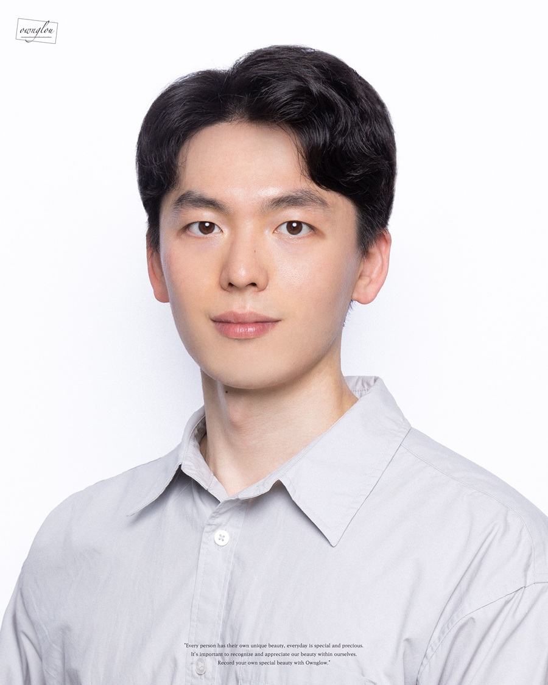
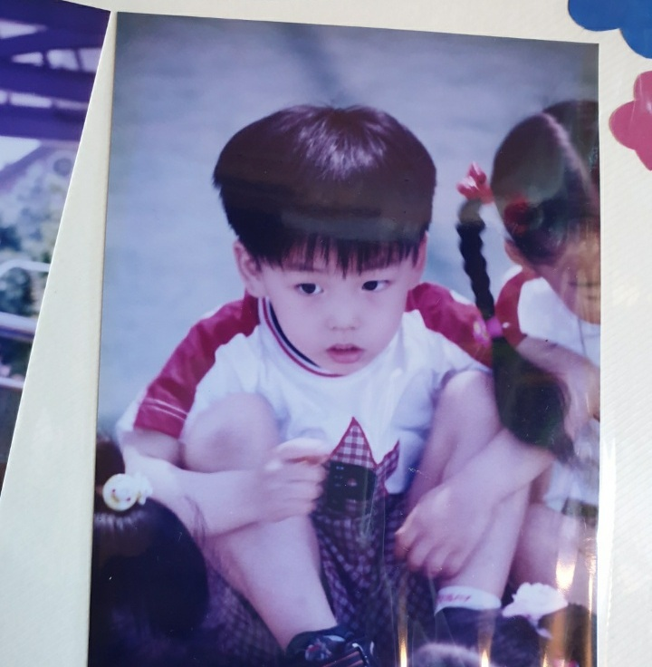
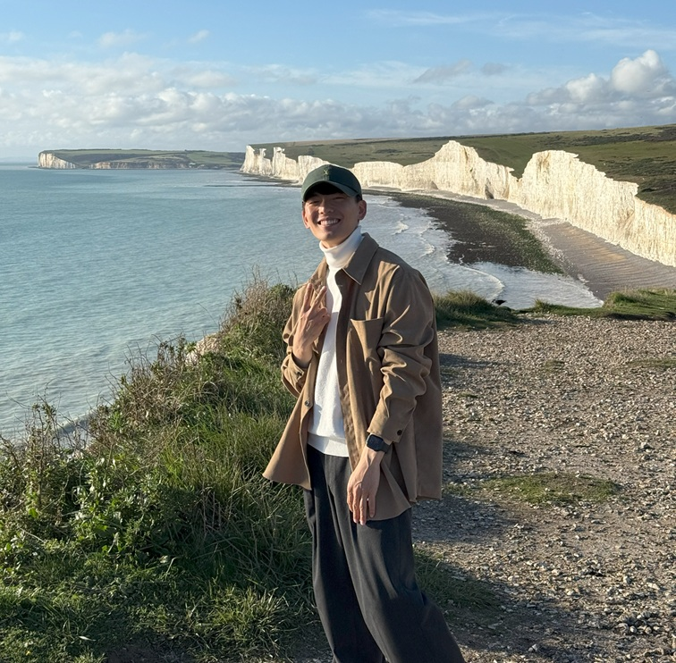
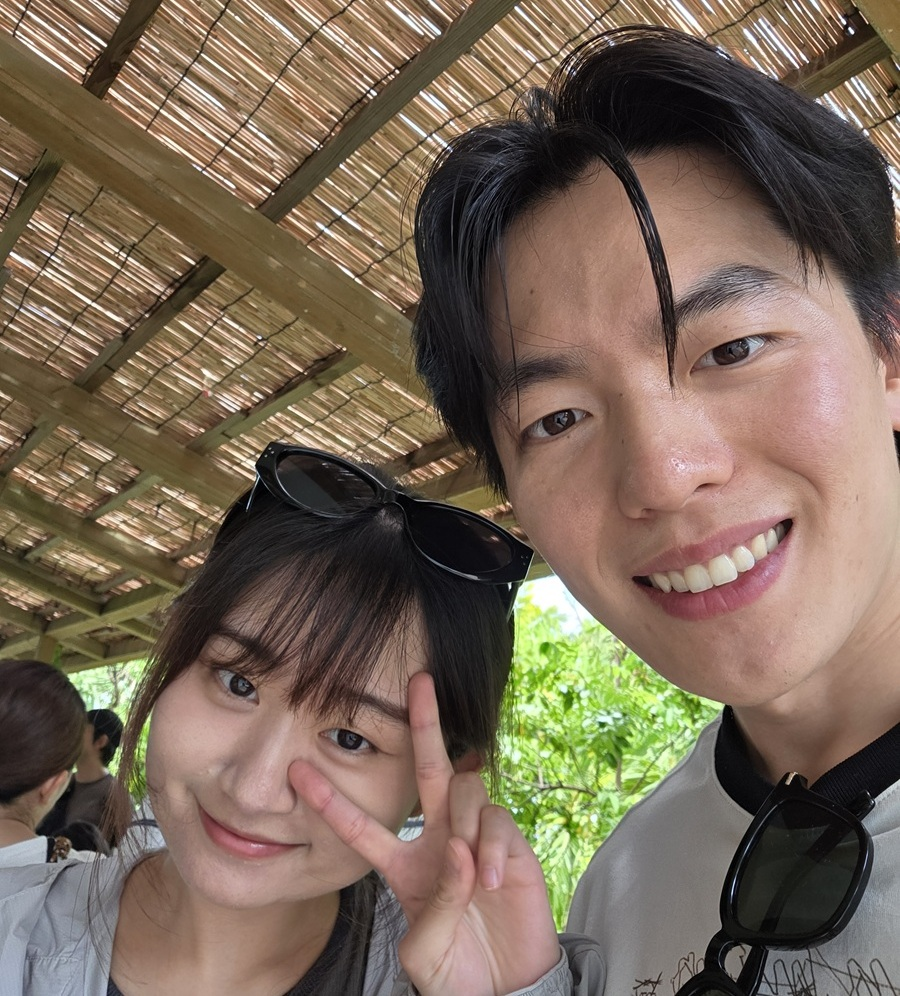
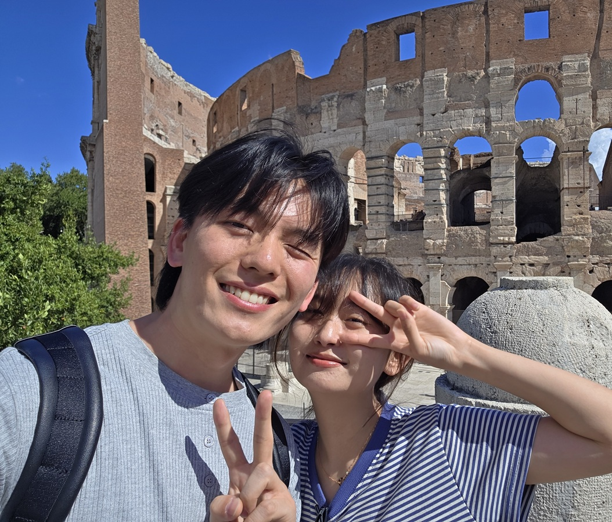
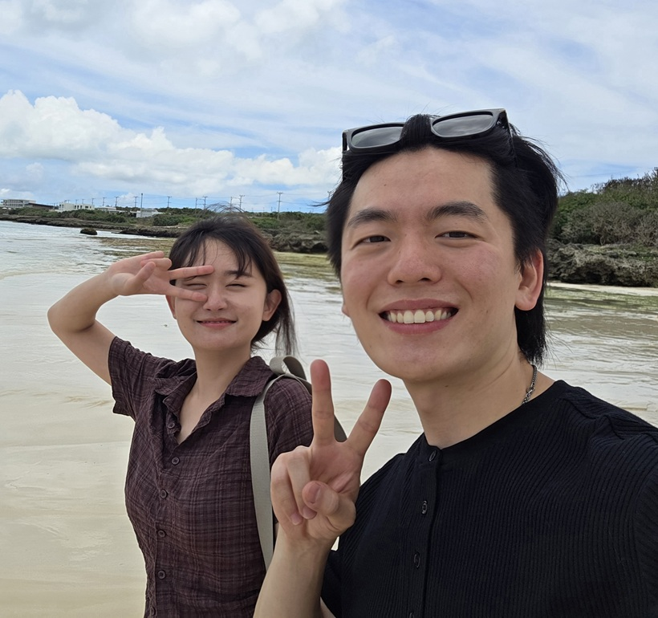
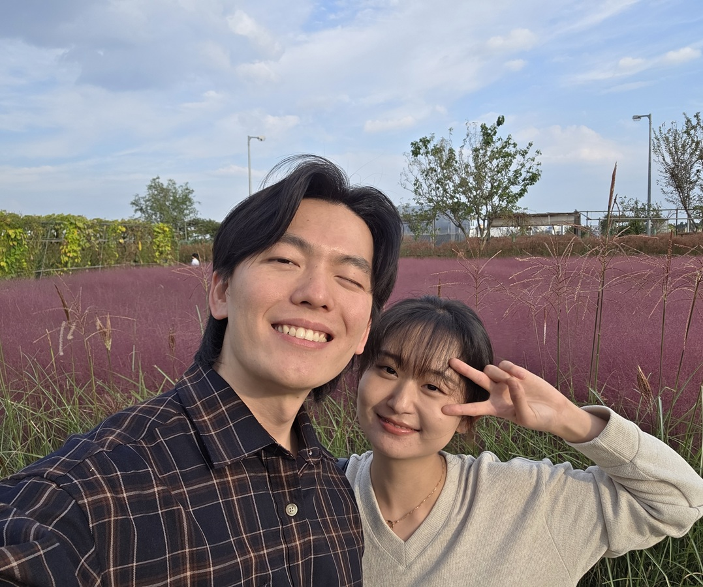
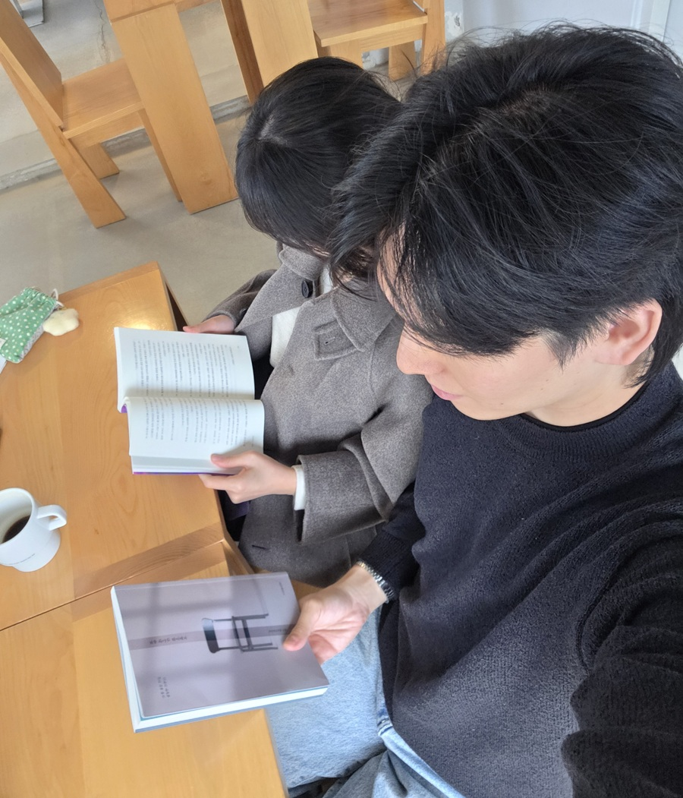
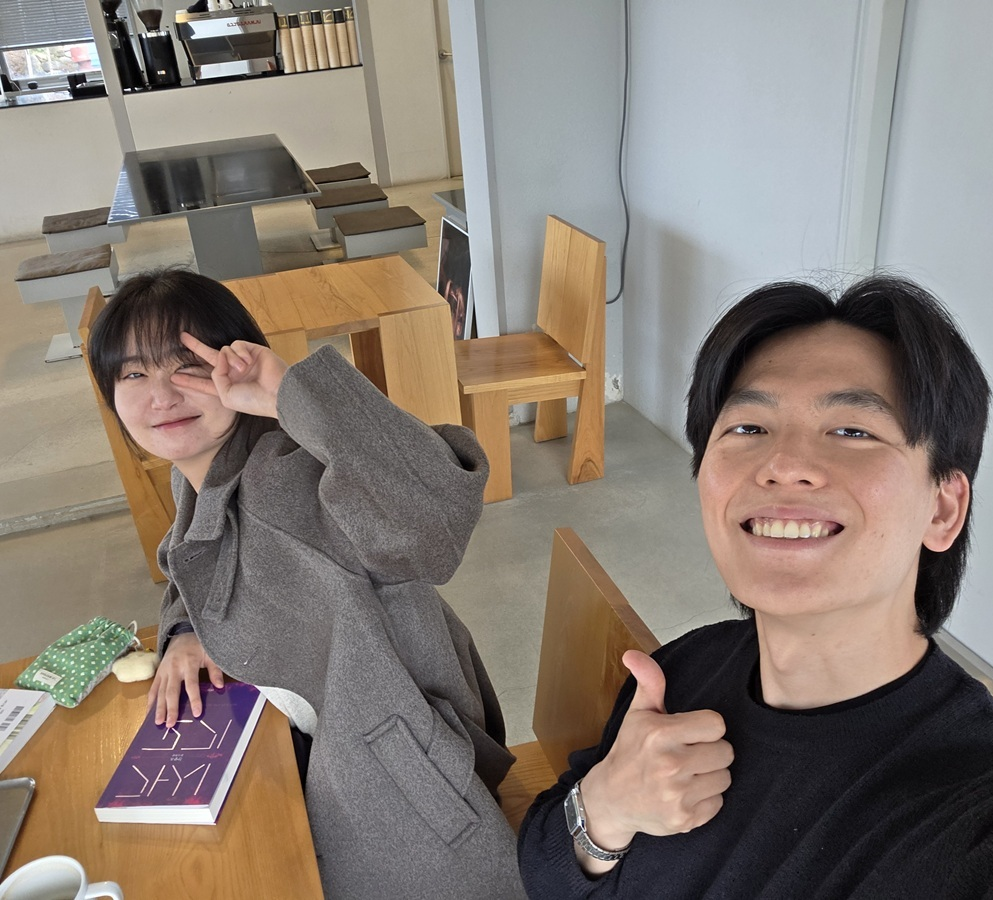
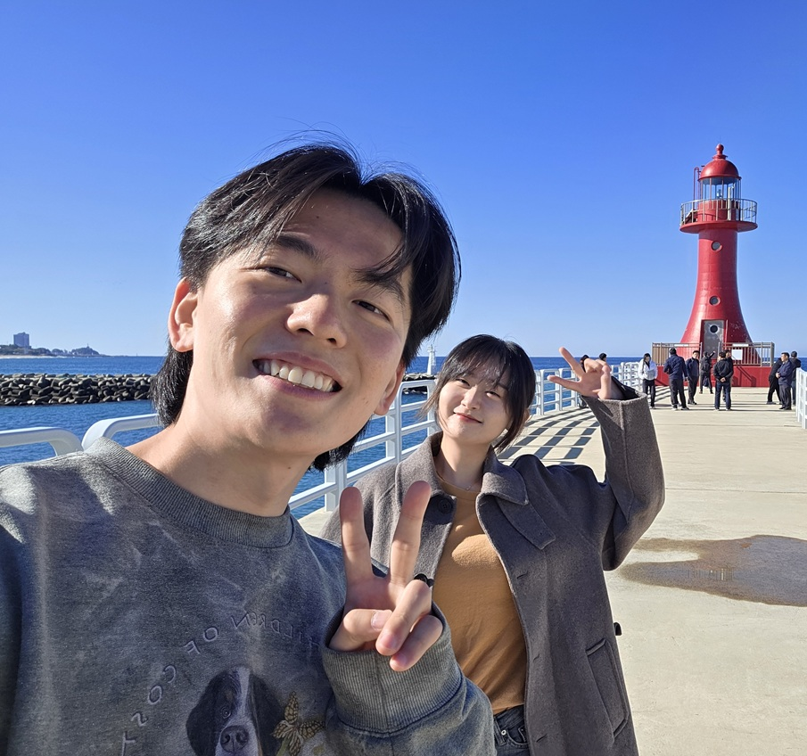

비밀번호를 입력해 주세요
계속하려면 비밀번호가 필요합니다.
계속하려면 비밀번호가 필요합니다.
🙇♂️처음 인사 드립니다🙇♂️
아버님, 어머님께서 궁금한 것이 많으실 것 같습니다.
저도 말씀드리고 싶은게 많아서 간단하게 준비했습니다.
잘 부탁드리고, 이쁘게 봐주시면 감사드리겠습니다. 😊
2026.11.29(일)

함께 찍은 사진이나버튼을 눌러 원하는 이야기부터 보실 수 있습니다.
저를 소개합니다
성장 배경, 삶의 목표, 현재 직업, 자산 관리와 미래 계획


저를 소개합니다
성장 배경, 삶의 목표, 현재 직업, 자산 관리와 미래 계획
율지와 용우
처음 만나게 된 계기, 율지가 좋은 이유, 함께했던 기억




율지와 용우
처음 만나게 된 계기, 율지가 좋은 이유, 함께했던 기억
두 사람이 함께 그리는 방향
결혼 결심, 결혼에 대한 생각, 결혼 후 생활 환경, 자녀 계획



두 사람이 함께 그리는 방향
결혼 결심, 결혼에 대한 생각, 결혼 후 생활 환경, 자녀 계획
감사합니다
아직 부족한 점도 있겠지만,
궁금하신 점은 편하게 여쭤봐 주세요.
오늘 나눈 이야기처럼, 앞으로도 진솔하게 다가가고 싶습니다.